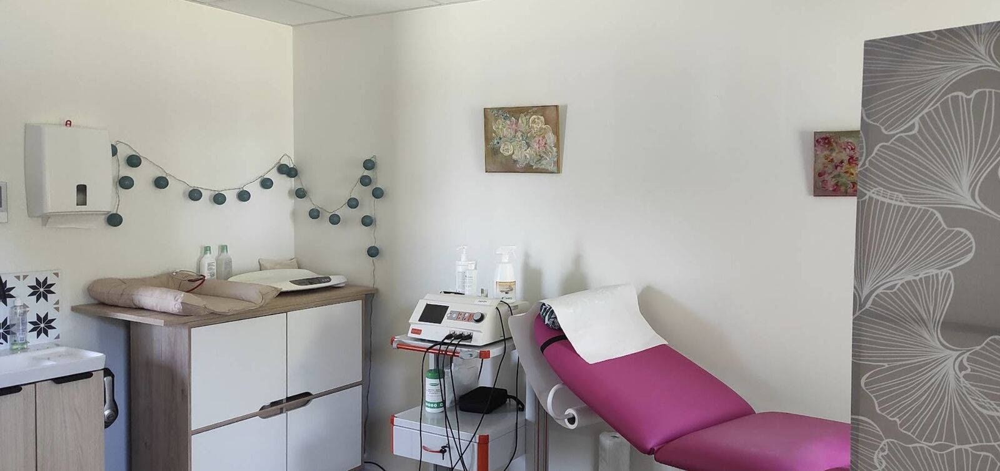

Téléphone
06 88 36 95 69Consultations et actes
Consultations et actes proposés au cabinet, tels qu'ils figurent sur le profil de prise de rendez-vous.
Suivi gynécologique
- Consultation de prévention
- Frottis de dépistage
- Contraception : pose et retrait de stérilet et d'implant
- Prescription de mammographie
- Dépistage et traitement des infections sexuellement transmissibles
- IVG médicamenteuse
Grossesse et naissance
- Consultation pré-conceptionnelle
- Déclaration de grossesse
- Consultations de suivi de grossesse
- Entretien prénatal
- Préparation à la naissance
- Monitoring (surveillance fœtale)
- Accompagnement de l'allaitement
- Visite post-natale
Rééducation et soins
- Rééducation périnéale
- Técarthérapie pour les cicatrices douloureuses (périnée, césarienne)
- Prise en charge des vulvodynies
- Engorgement mammaire
Le cabinet
Le cabinet se trouve au rez-de-chaussée, au 90 rue Marie Curie à Grand-Champ.

- Plain-pied
- Cabinet situé au rez-de-chaussée.
- Stationnement
- Parking gratuit.
- Équipement
- Appareil d'électrostimulation et appareil de técarthérapie, utilisés en rééducation périnéale et pour les douleurs de cicatrice.
Parcours et formations
Parcours
- 1998Diplôme d'État de sage-femme, école de sages-femmes de Montpellier.
- 20 ans et plusCHU Carémeau de Nîmes : salle de naissance, maternité, grossesses pathologiques et consultations.
- Aujourd'huiExercice libéral à Grand-Champ.
Diplômes et formations
- Diplôme d'État de sage-femme
- DU Prévention et suivi gynécologique pour sages-femmes
- Suivi gynécologique et contraception
- IVG médicamenteuse (REIVOC)
- Allaitement
- Hypnose et douleur aiguë
- Yoga pré et post-natal (méthode De Gasquet)
- Méthode proprioceptive pelvi-périnéale
Horaires
| Lundi | 8h30 – 18h30 |
|---|---|
| Mardi | 8h30 – 18h30 |
| Mercredi | 8h30 – 18h30 |
| Jeudi | 8h30 – 18h30 |
| Vendredi | 8h30 – 18h30 |
| Samedi | 9h00 – 12h00 |
| Dimanche | Fermé |
Consultations sur rendez-vous uniquement.
Tarifs et remboursement
| Conventionnement | Sage-femme conventionnée |
|---|---|
| Consultation gynécologique | 26,50 € |
| Carte Vitale | Acceptée |
| Paiement | Espèces, chèque, carte bancaire |
Les autres actes sont facturés selon les tarifs conventionnels de l'Assurance Maladie. Prise en charge détaillée sur ameli.fr.
Venir au cabinet
56390 Grand-Champ
Cabinet de plain-pied, parking gratuit.
- Téléphone
- 06 88 36 95 69
- havenardmartin@gmail.com
- Rendez-vous en ligne
- Doctolib